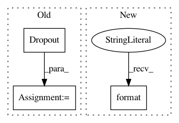

b1bfd16945a658d02847209e46a2ba8d72b456e1,autokeras/hypermodel/hyper_block.py,DenseBlock,build,#DenseBlock#Any#Any#,40
Before Change
output_node = tf.keras.layers.BatchNormalization()(output_node)
output_node = tf.keras.layers.Activation(active_category)(
output_node)
output_node = tf.keras.layers.Dropout(
rate=hp.Choice("dropout_rate", [0, 0.25, 0.5], default=0.5))(
output_node)
elif layer_stack == "dense-act":
output_node = tf.keras.layers.Dense(
hp.Choice("units_{i}".format(i=i),
[16, 32, 64, 128, 256, 512, 1024],
After Change
dropout_rate = hp.Choice("dropout_rate", [0, 0.25, 0.5], default=0.5)
for i in range(hp.Choice("num_layers", [1, 2, 3], default=2)):
units = hp.Choice(
"units_{i}".format(i=i),
[16, 32, 64, 128, 256, 512, 1024],
default=32)
if layer_stack == "dense-bn-act":
In pattern: SUPERPATTERN
Frequency: 3
Non-data size: 3
Instances
Project Name: keras-team/autokeras
Commit Name: b1bfd16945a658d02847209e46a2ba8d72b456e1
Time: 2019-07-01
Author: jhfjhfj1@gmail.com
File Name: autokeras/hypermodel/hyper_block.py
Class Name: DenseBlock
Method Name: build
Project Name: dmlc/dgl
Commit Name: 69f5869f3b6d190ed99e156a932634393ab361dd
Time: 2020-08-12
Author: xiaotj1990327@gmail.com
File Name: python/dgl/nn/pytorch/conv/sageconv.py
Class Name: SAGEConv
Method Name: __init__